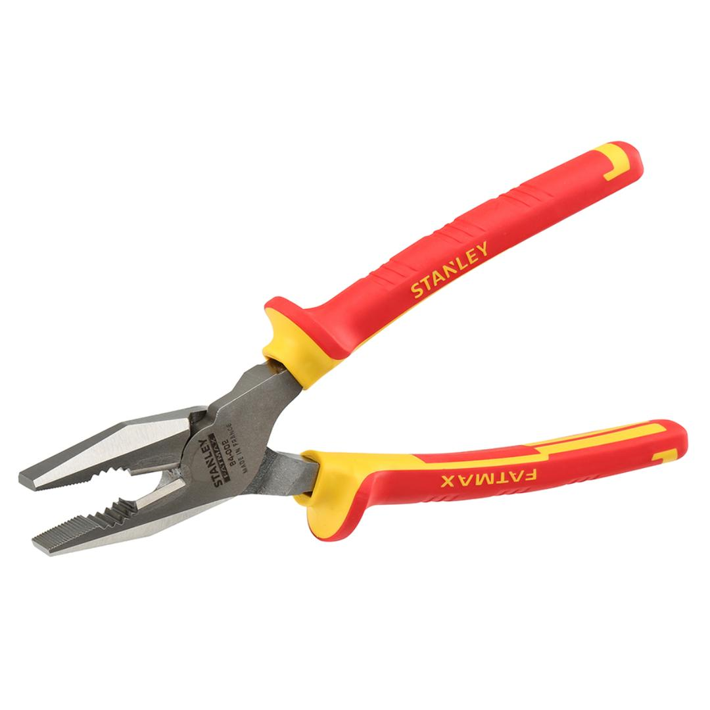
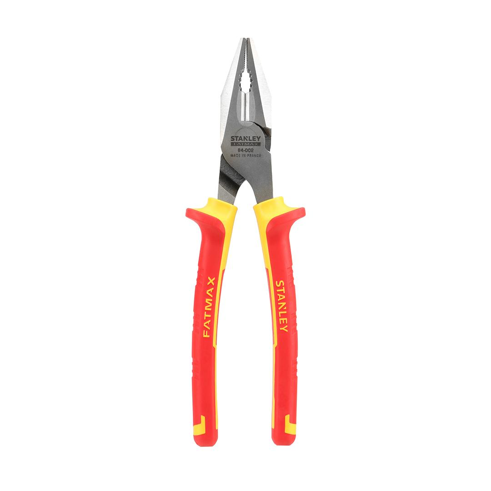
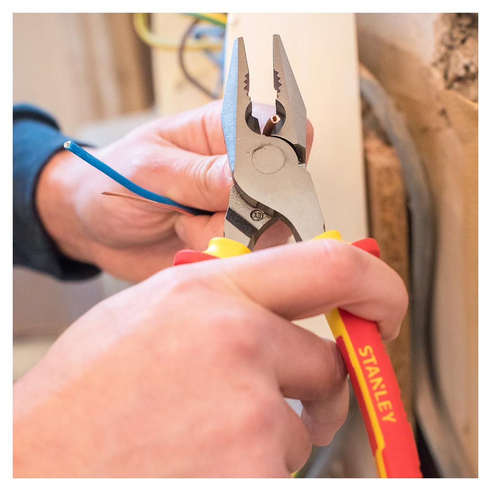
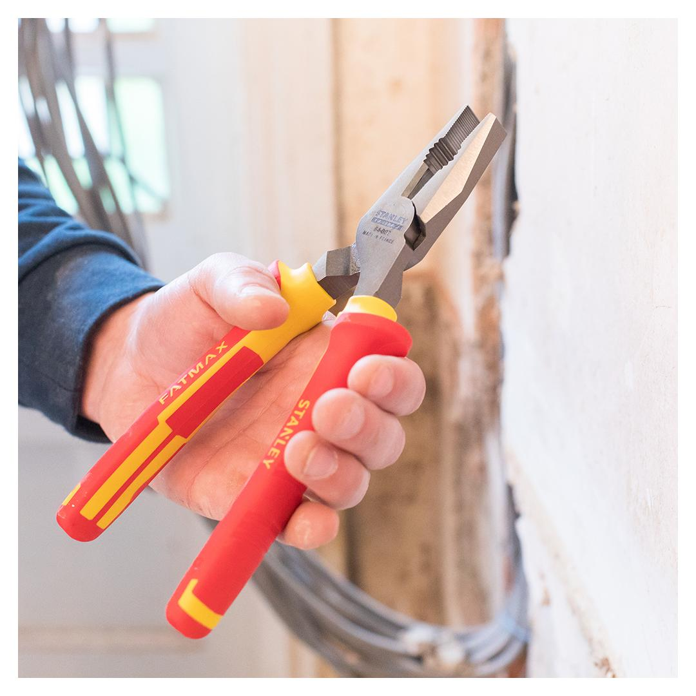

<h1>Stanley | Fatmax VDE Combination Plier / 200 mm</h1><p>0-84-002</p><div style="display:flex;flex-wrap:wrap;gap:8px"></div><ul>
<li>1000V rated handle</li>
<li>Bi-material handle with secure grip grooving</li>
<li>Compliant to EN60900, IEC/CEI900, VDE0680</li>
<li>Hand ground, induction hardened blade for long life and accuracy</li>
<li>Heat treated high chrome steel forging for long life and durability</li>
<li>Individually tested to 10,000v</li>
<li>Interlocking joint assembly for smooth cutting</li>
<li>Safe live line working to 1,000v</li>
</ul>
<h4>Specifications</h4><table><tr><td>Rating</td><td>Industrial</td></tr><tr><td>Safe live working voltage</td><td>1000 V</td></tr><tr><td>Length (mm)</td><td>200 mm</td></tr></table><h4>Includes</h4><ul><li>1x Plier</li></ul>